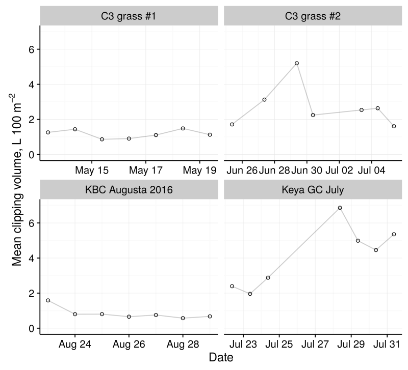
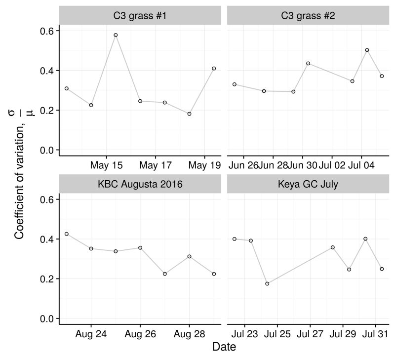

Chapter 7 Clipping volume variation from green to green
Ryo Ishikawa won the KBC Augusta tournament at Keya GC in Fukuoka this week.9 Before the tournament started, he was so struck by the green conditions that he wrote about it on his website.10
Ryo Ishikawa’s message on his website
During the tournament, he putted well, with 27 putts Thursday, 26 Friday, 24 Saturday, and 26 Sunday. He had no three putts and 41 one putts on these korai greens during the tournament.
The greenkeeping staff at Keya GC measure the volume of clippings from 12 greens when the greens are mown. I shared some photos of this process, and some of the results during the tournament this year, in a series of tweets during the 2016 tournament. These tweets have been organized into this Twitter moment, and you can view them all in one place here: https://twitter.com/i/moments/990124653527023616.
I wondered how the clipping volume at Keya GC during the tournament this year compared to other courses. I also wondered if the variation in clipping volume from green to green during the tournament was different from clipping volume variability during a regular week.
To do that, I looked at clipping volume from 7 consecutive days in which greens were mown. Data from Keya during tournament week in 2016 are in the chart below, along with data from the last 7 mowing days at Keya during July 2016, and data from earlier this year from two different courses with cool-season grass.

As far as consistency in the volume of clippings, the tournament data looks impressive. I would expect that this consistency in clipping volume would result in more consistent ball roll on the greens during a tournament compared to everyday play.
I wanted to look also at the variability in clipping volume from green to green on a particular day.11 Is the variability in clipping volume from green to green lower during the tournament maintenance? To do that, I calculated the coefficient of variation (cv) for these same data. The cv is the standard deviation (σ) divided by the mean (μ).

I like that the cv during the tournament week was on a downward trend. I don’t see a huge difference in the overall cv – the mean cv for these dates is 0.31 for C3 grass #1, 0.37 for C3 grass #2, 0.32 for Keya at KBC Augusta 2016, and 0.32 for Keya during the last 7 mows of July.
One might speculate that greens with the same growing environment and the same soil and the same grass would have a lower cv. The cv shown here may represent some indication of the microclimate effect on growth across a property.
I wrote this post (https://www.blog.asianturfgrass.com/2016/08/clipping-volume-variation-from-green-to-green.html) immediately after the 2016 KBC Augusta tournament.↩
You can read an English translation of his post at the start of the article about Andrew McDaniel from Golf Digest, kindly translated by Yukio Ueno and available at http://www.files.asianturfgrass.com/andrew_digest_2018.html.↩
In this post I was looking at the coefficient of variation. I now am less interested in looking at the coefficient of variation and think it is more useful to look at the standard deviation of clipping volume data as an indication of variability. The Cv gets really low when the clipping volume is high, even where there is quite a lot of variation.↩